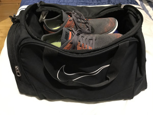
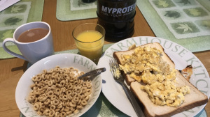
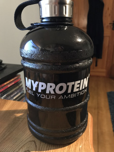

Hacks
Staying fit and and healthy is no easy task, especially when faced with the hustle and bustle of everyday life combined with the countless distractions. I’m going to outline some essential Fitness and Nutrition Hacks to keep you motivated. If you take nothing else away from this blog series, let it be the following 4 hacks;
- Goal Setting: Setting goals are an important aspect of Health and Fitness as well as everyday life. By setting a goal, you pave yourself a pathway on the direction you want to be heading. Set minor, achievable goals that point you in the direction of your long term goals. The SMART Goal Setting criteria can be applied to fitness goals just like anything else. Reward yourself when you achieve your goals – Buy something for yourself, treat yourself to a cheat etc.
- Pack your Gym Bag: The night before a workout session, I always pack my gym bag and put it in the car, ready to go. The reason for this is that I can drive straight from work/college. Failing to pack my gym bag forces me to return home and possibly be interrupted by some of these countless distractions I mentioned earlier. Being prepared ahead of time helps me stick to my goals and remain motivated.

- Variety is the Spice of Life: To avoid feeling demotivated, mix up your diet and workouts to keep it fresh. Modifying your diet doesn’t necessarily mean you have to go out and buy new food, the change can be made in the preparation of the food. For example, each morning I have eggs, but what I make varies between omelettes, boiled eggs, scrambled eggs, fried eggs, poached eggs etc. Not only is switching your workout routine beneficial for your body, it combats workout boredom. How often you change up your routine is entirely based on the individual. As long as you are progressing and are content with your current routine keep pushing and continue to challenge your limits!

- Drink Water: It should go without saying that drinking water is essential, it’s necessary for all life and is the most important nutrient in our body. Despite this, over 70% of us drink less than half of the recommended daily h20 intake. To drink more water, I recommend carrying a larger bottle to constantly have a supply. Another option is to flavour the water with fruit to make it more desirable.

Hopefully by following these 4 hacks, it will help you remain focused on your fitness journey and motivate you to push yourself, being no one else will do it for you!